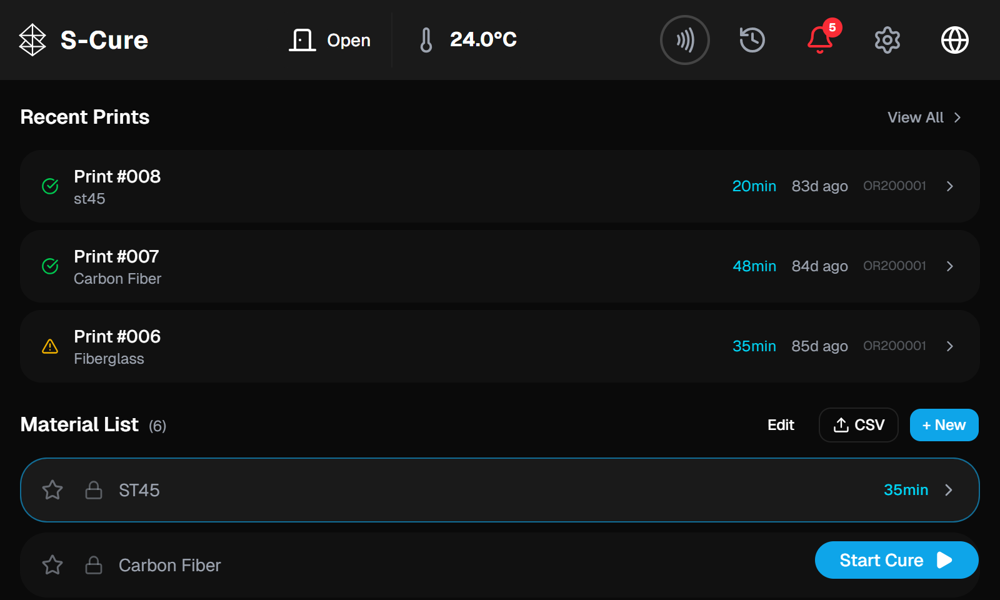
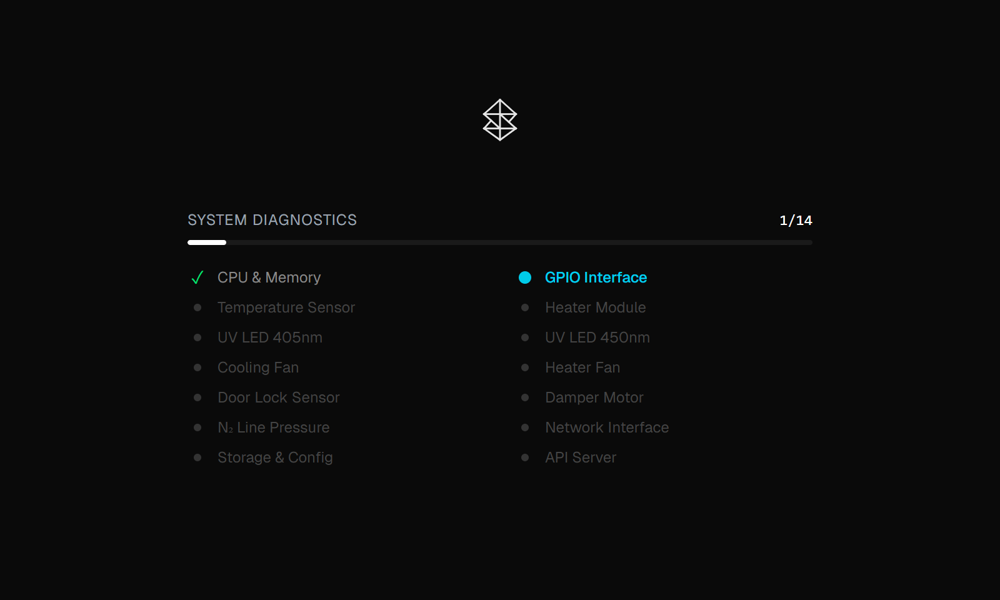
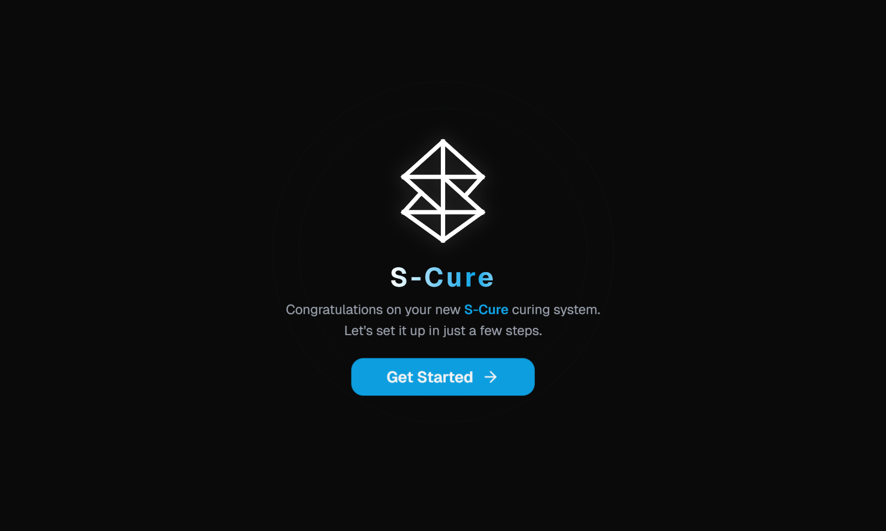
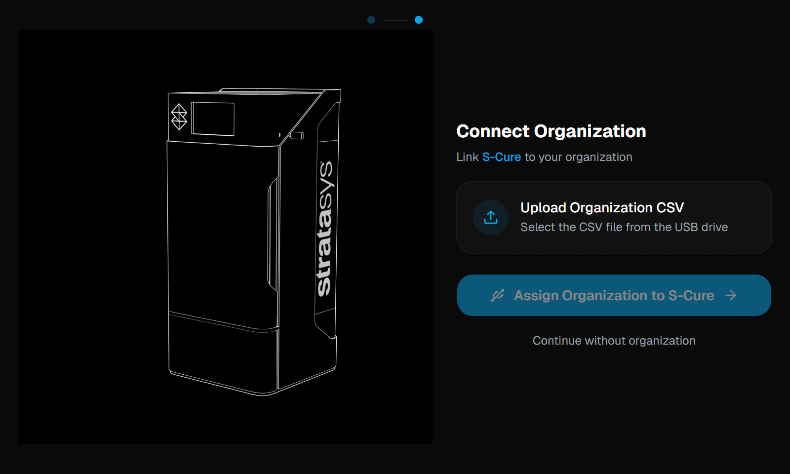
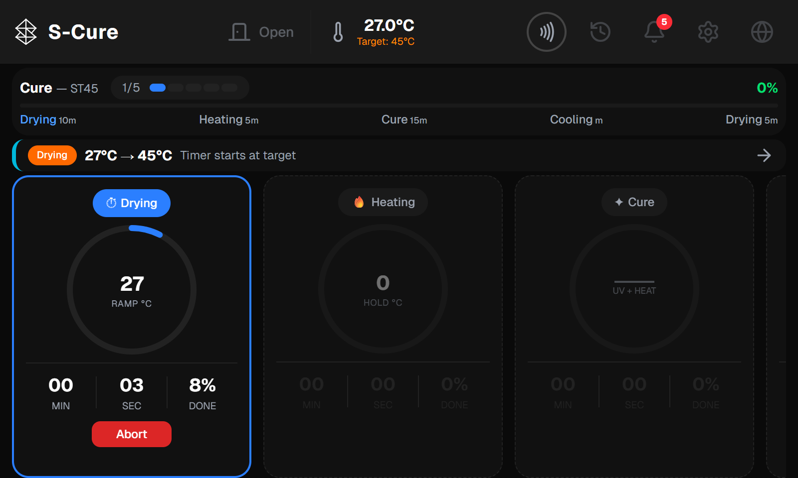
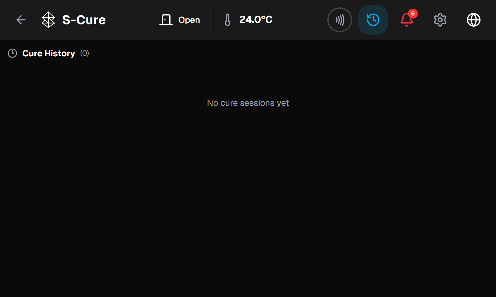
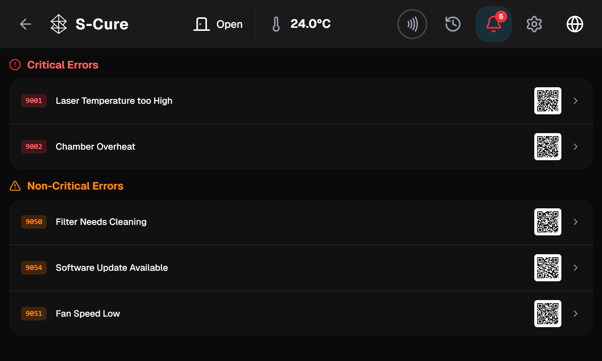
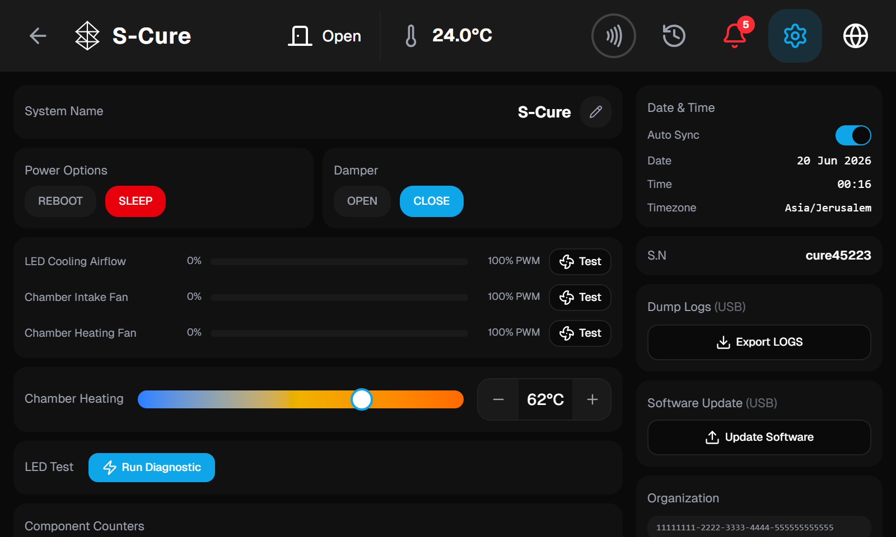

UV / thermal post-processing for 3D prints, composites & dental models.
Runs fully offline — no internet dependency, single-user touch UI.
Factory presets delivered & refreshed from the cloud / version updates, plus user-defined CSV programs.
Recent print jobs arrive from the connected 3D printer / organization — tap one to cure the matching material.
The history button (↺) in the top bar opens a dedicated page — every cure run is saved with what was processed, when and with which program.


14-point self-test on every boot · 3-step first-run setup wizard

Naming the box gives it a clear identity across a fleet — shown in the top bar, history and reports.
A CSV on a USB drive carries the organization UUID that ties this device to the customer's account.
It's what turns a standalone box into part of your world — enabling print jobs from the printers, cloud-delivered presets and full traceability.
Link now, or skip and assign it later from Settings — no dead end.
The selected material defines the full sequence of phases and their settings.
The chamber rises from ambient to the target; the phase timer only starts once at target.
Drying → Heating → Cure → Bleaching → Cooling, each with its own temperature, time & UV intensity.
Per-phase circular gauges, countdown timer and % progress as the run advances.
The chamber cools, the door opens and the run is saved to print history.


The history button (↺) opens a dedicated page listing every cure run.
Material, date & time, duration, steps completed and final status.
Color-coded: completed, aborted or error — instantly readable.
Runs with telemetry can be downloaded (↓) as a per-cure report.

Color-coded by severity; 8 critical errors and 7 warnings defined.
Each error carries a QR code that opens its troubleshooting page.
CS can edit descriptions & steps via errors.json — no code changes.
Damper, fans, chamber heating — direct technician control with PWM sliders.
Fan test & LED diagnostic with pass/fail readouts.
Log export to USB and signed software updates from USB.

The software is built using advanced AI tooling. Instead of long development cycles, we move from requirement → working code at a dramatically higher pace.
Direct translation of SRS requirements into implementation — days, not weeks, per module.
Change a requirement → the implementation follows almost immediately. High agility in review.
One set of patterns, one code style, a modular architecture across the whole system.
Testing is not pushed to the end — it is generated alongside development. Every new feature ships with dedicated QA tests, and a visual test tool already lives in the project.
A standalone HTML tool lets non-developers run and document test scenarios, including a visual error editor — no code required.
First-run wizard, device identity, organization linking via USB
Recent prints, material list, selection & start cure
Touch CSV builder, import, validation, presets
Phase sequence, heating ramp, N₂, completion & Abort critical
PI controller, delta-sigma DAC, fan management critical
Critical errors, warnings, QR docs, troubleshooting
Hardware controls, diagnostics, log export, power
Status, static IP, diagnostics (ping / traceroute)
RSA-4096 signed .scu, USB install, auto-rollback
Success isn't an abstract benchmark. It's simple: the system does exactly what the requirements say — and when a requirement changes, we adapt at a fast pace.
Built directly from the signed SRS. Every functional area is implemented and traceable — requirement → component → test.
Because development is AI-driven, a changed requirement turns into working code quickly — low cost to adjust, even late in the process.
Fully offline · persists across reboots · auto-rollback on failed update
≥44px touch targets · dark industrial theme · no keyboard needed
With AI-driven development and QA, we significantly shorten every stage and enable frequent feedback rounds.
This review — lock the SRS and close open decisions
Build modules with AI against the signed requirements
Tests alongside development + hardware integration
Customer acceptance testing and release
⏩ The sooner requirements lock today, the sooner development begins.
Formal approval of SRS v1.1 as the basis for development — or mark what needs to change.
Confirm what is critical and required for release, and what can be deferred.
Answer the open questions (next slide) — values, thresholds and behaviors.
Agree on what an "approved system" looks like — what's tested and when it's done.
With requirements approved and open points decided, we move straight into implementation — AI-driven development and QA shortening the path to a working product.
Approve the SRS + answer open questions
Begin modular implementation by priority
Progress demos and feedback rounds